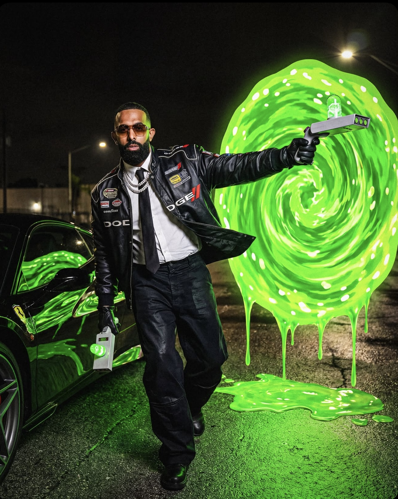

Figura importante del trap latino.
Eladio Carrión nació el 14 de noviembre de 1994 en Kansas, Estados Unidos, aunque creció en Puerto Rico. Antes de dedicarse a la música fue nadador profesional y representó a Puerto Rico en competencias internacionales. Actualmente es uno de los máximos exponentes del trap latino.
📸 Instagram: @eladiocarrion
▶️ YouTube: Canal Oficial de Eladio Carrión
🎵 Spotify: Escuchar a Eladio Carrión